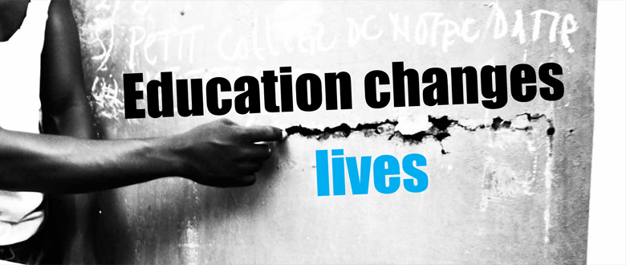
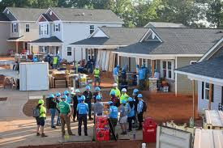

Our Blog
Read stories, reflections, and updates from our volunteers and community programs.
How Our Education Program Changes Lives
Every week, our volunteers help students improve their learning skills. Many children who once struggled with reading and math are now excelling in school thanks to consistent support and encouragement.
The Power of Giving: Our Food Drive Experience
Volunteering at the monthly food drive is always inspiring. Seeing families leave with smiles reminds us why community support is so important. Together, we can make a difference one meal at a time.

Building Hope through Our Housing Program
Renovating homes for families in need brings warmth and safety back to their lives. Each project we complete strengthens our community and spreads hope to more people.
